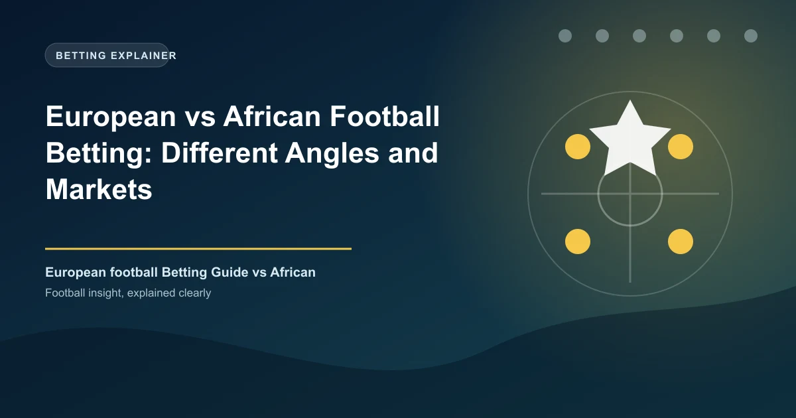

European vs African Football Betting: Different Angles and Markets

Betting on the Premier League and betting on the Nigerian NPFL require fundamentally different approaches. The information gap, market efficiency, odds quality, and available markets are worlds apart. For Kenyan and Nigerian bettors who bet across both European and African leagues, understanding these differences is essential to finding where the real value lies — and where the real risks hide.
The Key Difference: Market Efficiency
In a financially efficient market, odds reflect all available information. In inefficient markets, they don't. European top leagues (Premier League, La Liga, Bundesliga) are among the most efficient sports betting markets in the world — millions of bettors, sophisticated models, and razor-thin margins. African leagues are significantly less efficient — meaning your local knowledge goes further.
Most Efficient: Premier League, La Liga, Bundesliga, Champions League
Moderately Efficient: Serie A, Ligue 1, Europa League, PSL, GPL
Least Efficient: NPFL, KPL, lower-tier African leagues, lower European divisions
European Football Betting Characteristics
Strengths
- Deep data available: xG, passes, pressures, formations — everything tracked
- Many bookmakers competing — best odds available
- Wide market coverage: corners, cards, player props, Asian lines
- Professional analysis, tipsters, models all publicly available
Weaknesses
- Odds are sharp — bookmaker margin thin, value is hard to find
- Information is public — everyone has access to the same data
- Competition is fierce — professional bettors make the markets
- Lower margins mean smaller edges to exploit
African Football Betting Characteristics
Strengths
- Less information available — local bettors who follow leagues have a real knowledge advantage
- Odds are less efficiently priced — bookmakers rely on limited data
- Home advantage is stronger — bet on home teams more confidently
- Consistent patterns: low scoring, high draws, set piece goals
Weaknesses
- Limited stats — advanced metrics largely unavailable
- Fewer markets — corner and card betting options are limited
- Fixture congestion affects scheduling unpredictably
- Lineup information less reliable before kick-off
Where to Bet on Each Market
European football: Use Pinnacle or Bet365 for the best odds on European leagues. Compare on Oddschecker.
African football: Use Betway Kenya, Bet9ja, or local bookmakers who cover African leagues at better odds than international platforms.
Best Markets by Region
| League | Best Markets | Why |
|---|---|---|
| Premier League | 1X2, BTTS, In-Play | Deepest market, best odds competition |
| Champions League | Asian Handicap, Correct Score | Markets are efficient but still beatable |
| La Liga | Over/Under 2.5, Home Win | High home win rate, consistent patterns |
| South African PSL | 1X2, Under 2.5, Draw | Low-scoring, home advantage strong |
| Nigerian NPFL | 1X2, Draw No Bet, Under 2.5 | Draw-heavy, goal-scoring low |
| Kenyan KPL | 1X2, Home Win | Strong home dominance, limited markets |
Pro Tip: Bet European with Your Head, African with Your Heart and Research
European football rewards rational, data-driven, analytical betting. African football rewards local knowledge, community insight, and pattern recognition. If you follow the Premier League, bet on it analytically. If you know the NPFL through local knowledge, bet on it using that edge. Don't mix the approaches — European betting requires cold analysis; African betting can benefit from passion and proximity.
The Bottom Line
European football betting is for analytical efficiency — use the best odds, the deepest data, and disciplined staking. African football betting is for information arbitrage — use your local knowledge of the PSL, NPFL, and KPL where the bookmaker knows less than you do. Bet both ways, with different strategies.
Free Daily Predictions
WinFulltime covers major leagues and provides AI-powered analysis to complement your research.
View Predictions →